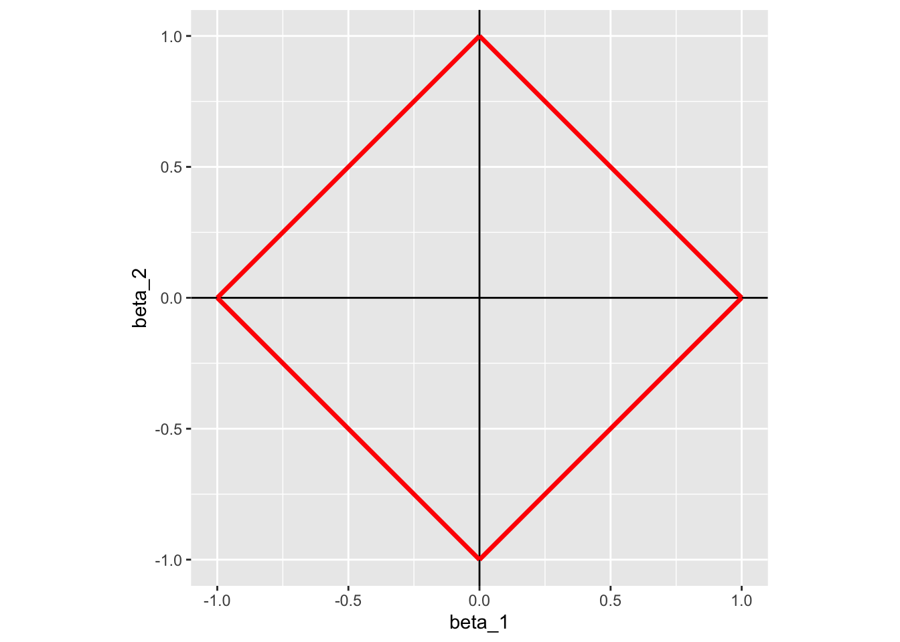
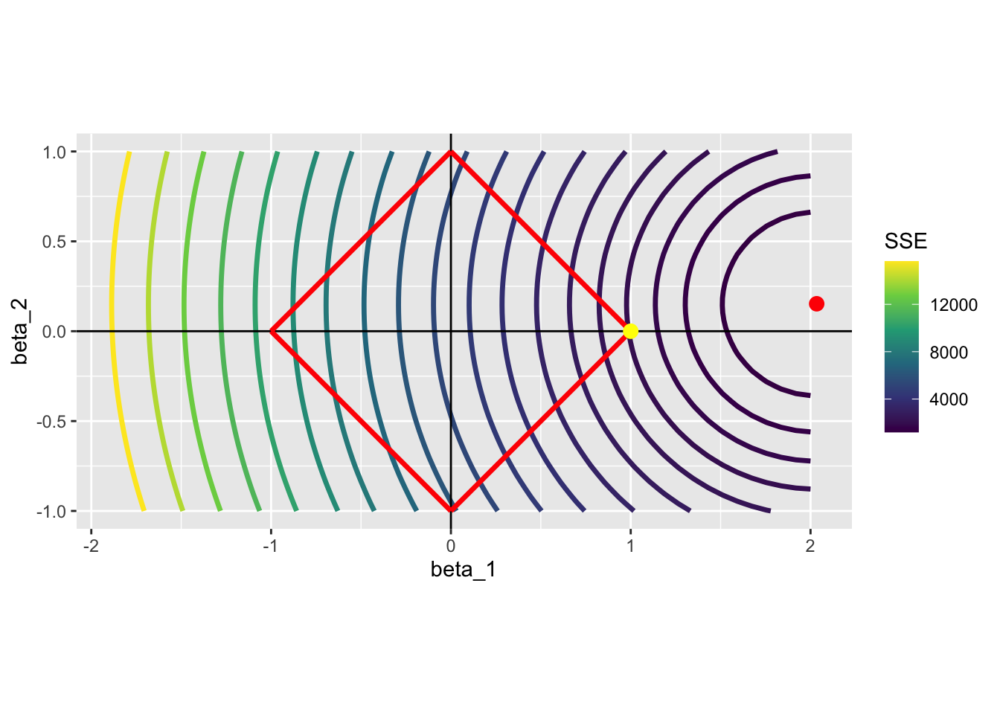
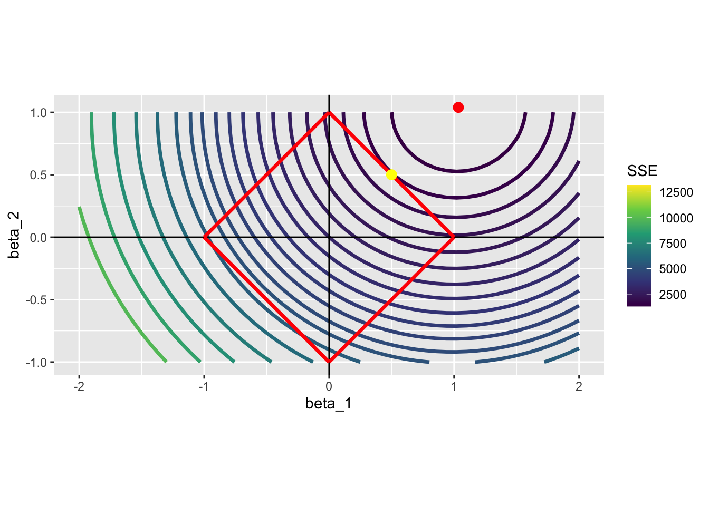

4Regression Shrinkage Methods: LASSO (Ridge and Elastic Net)
4.1 Shrinkage Methods
We have talked about variance-bias trade-off. When you “shrink” coefficients towards zero, you may be able to achieve lower the variance of \(\hat{f}(x)\) while increasing bias, which can result in a lower MSE.
Consider the following generic linear model:
\[
y = X\beta + \mu
\]
\(y\): dependent variable
\(X\): a collection of explanatory variables (\(K\) variables)
\(\beta\): a collection of coefficients on the explanatory variables \(X\)
\(\mu\): error term
Borrowing from the documentation of the glmnet package(), the minimization problem shrinkage methods solve to estimate coefficients for a linear model can be written as follows:
\(\lambda (> 0)\) is the penalization parameter that governs how much coefficients shrinkage happens (more details later).
The shrinkage method is called LASSO when \(\alpha = 0\), Ridge regression when \(\alpha = 1\), and elastic net when \(\alpha \in (0, 1)\).
Ridge regression and elastic net are rarely used. So, we are going to cover only LASSO here.
4.2 LASSO
When there are many potential variables to include, it is hard to know which ones to include. LASSO can be used to select variables to build a more parsimonious model, which may help reducing MSE.
As mentioned above, LASSO is a special case of shrinkage methods where \(\alpha = 1\) in Equation eq-shrinkage-general. So, the optimization problem of LASSO is
, where \(\lambda\) is the penalization parameter.
Alternatively, we can also write the optimization problem as the constrained minimization problem as follows1:
\[
Min_{\beta} \sum_{i=1}^N (y_i - X_i\beta)^2 \\
\mbox{subject to } \sum_{k=1}^K |\beta_k| < t
\tag{4.3}\]
A graphical representation of the minimization problem is highly illustrative on what LASSO does. Consider the following data generating process:
\[
y = 0.2 x_1 + 2 * x_2 + \mu
\]
When \(t\) is set to 1 in Equation eq-constrained-lasso, LASSO tries to estimate the coefficient on \(x_1\) and \(x_2\) by solving the following problem:
This means that, we need to look for the combinations of \(\beta_1\) and \(\beta_2\) such that the sum of their absolute values is less than 1. Graphically, here is what the constraint looks like:
Code
ggplot()+geom_hline(yintercept =0)+geom_vline(xintercept =0)+geom_segment(aes(x =1, y =0, xend =0, yend =1), color ="red", size =1.2)+geom_segment(aes(x =1, y =0, xend =0, yend =-1), color ="red", size =1.2)+geom_segment(aes(x =-1, y =0, xend =0, yend =1), color ="red", size =1.2)+geom_segment(aes(x =-1, y =0, xend =0, yend =-1), color ="red", size =1.2)+coord_equal()+xlab("beta_1")+ylab("beta_2")

Now, let’s calculate what value the objective function takes at different values of \(\beta_1\) and \(\beta_2\).
We first generate data.
N<-1000# number of observationsx_1<-rnorm(N)x_2<-rnorm(N)mu<-rnorm(N)# error termy<-2*x_1+0.2*x_2+mudata<-data.table(
y =y,
x_1 =x_1,
x_2 =x_2)
Without the constraint, here is the combination of \(\beta_1\) and \(\beta_2\) that minimizes the objective function of Equation eq-constrained-lasso, which is the same as OLS estimates.
(ols_coefs<-lm(y~x_1+x_2, data =data)$coefficient)
We now calculate the value of the objective functions at different values of \(\beta_1\) and \(\beta_2\). Here is the set of \(\{\beta_1, \beta_2\}\) combinations we look at.
Loop over the row numbers of beta_table to find SSE for all the rows (all the combinations of \(\beta_1\) and \(\beta_2\)).
#=== define the function to get SSE ===#get_sse<-function(i, data){#=== extract beta_1 and beta_2 for ith observation ===#betas<-beta_table[i, ]#=== calculate SSE ===#sse<-copy(data)%>%.[, y_hat:=x_1*betas[, beta_1]+x_2*betas[, beta_2]]%>%.[, se:=(y-y_hat)^2]%>%.[, sum(se)]return(sse)}#=== calculate SSE for each row of beta_table ===#sse_all<-lapply(1:nrow(beta_table),
function(x)get_sse(x, data))%>%unlist()#=== assign the calculated sse values as a variable ===#(beta_table[, sse:=sse_all])
Here is the contour map of SSE as a function of \(\beta_1\) and \(\beta_2\). The solution to the unconstrained problem (OLS estimates) is represented by the red point. Since LASSO needs to find a point within the red square, the solution would be \(\beta_1 = 1\) and \(\beta_2 = 0\) (yellow point). LASSO did not give anything to \(\beta_2\) as \(x_1\) is a much bigger contributor of the two included variables. LASSO tends to give the coefficient of \(0\) to some of the variables when the constraint is harsh, effectively eliminating them from the model. For this reason, LASSO is often used as a variable selection method.
Code
ggplot()+stat_contour(
data =beta_table,
aes(x =beta_1, y =beta_2, z =sse, color =..level..),
size =1.2,
breaks =round(quantile(beta_table$sse, seq(0, 1, 0.05)),
0))+scale_color_viridis_c(name ="SSE")+geom_hline(yintercept =0)+geom_vline(xintercept =0)+geom_segment(aes(x =1, y =0, xend =0, yend =1), color ="red", size =1.2)+geom_segment(aes(x =1, y =0, xend =0, yend =-1), color ="red", size =1.2)+geom_segment(aes(x =-1, y =0, xend =0, yend =1), color ="red", size =1.2)+geom_segment(aes(x =-1, y =0, xend =0, yend =-1), color ="red", size =1.2)+#=== OLS point estimates (solutions without the constraint) ===#geom_point(aes(x =ols_coefs["x_1"], y =ols_coefs["x_2"]),
color ="red",
size =3)+geom_point(aes(x =1, y =0),
color ="yellow",
size =3)+coord_equal()

Let’s consider a different data generating process: \(y = x_1 + x_2 + \mu\). Here, \(x_1\) and \(x_2\) are equally important unlike the previous case. Here is what happens:
Code
N<-1000# number of observationsx_1<-rnorm(N)x_2<-rnorm(N)mu<-rnorm(N)# error termy<-x_1+x_2+mudata<-data.table(
y =y,
x_1 =x_1,
x_2 =x_2)ols_coefs<-lm(y~x_1+x_2, data =data)$coefficient#=== calculate sse for each row of beta_table ===#sse_all<-lapply(1:nrow(beta_table),
function(x){betas<-beta_table[x, ]sse<-copy(data)%>%.[, y_hat:=x_1*betas[, beta_1]+x_2*betas[, beta_2]]%>%.[, se:=(y-y_hat)^2]%>%.[, sum(se)]return(sse)})%>%unlist()#=== assign the calculated sse values as a variable ===#beta_table[, sse:=sse_all]#=== visualize ===#ggplot()+stat_contour(
data =beta_table,
aes(x =beta_1, y =beta_2, z =sse, color =..level..),
size =1.2,
breaks =round(quantile(beta_table$sse, seq(0, 1, 0.05)),
0))+scale_color_viridis_c(name ="SSE")+geom_hline(yintercept =0)+geom_vline(xintercept =0)+geom_segment(aes(x =1, y =0, xend =0, yend =1), color ="red", size =1.2)+geom_segment(aes(x =1, y =0, xend =0, yend =-1), color ="red", size =1.2)+geom_segment(aes(x =-1, y =0, xend =0, yend =1), color ="red", size =1.2)+geom_segment(aes(x =-1, y =0, xend =0, yend =-1), color ="red", size =1.2)+#=== OLS point estimates (solutions without the constraint) ===#geom_point(aes(x =ols_coefs["x_1"], y =ols_coefs["x_2"]),
color ="red",
size =3)+geom_point(aes(x =0.5, y =0.5),
color ="yellow",
size =3)+coord_equal()

In this case, the solution would be (very close to) \(\{\beta_1 = 0.5, \beta_2 = 0.5\}\), with neither of them sent to zero. This is because \(x_1\) and \(x_2\) are equally important in explaining \(y\).
4.3 LASSO implementation: R
You can use the glmnet() from the glmnet package run LASSO. For demonstration, we use the QuickStartExample data.
#=== get the data ===#data(QuickStartExample)#=== see the structure ===#str(QuickStartExample)
List of 2
$ x: num [1:100, 1:20] 0.274 2.245 -0.125 -0.544 -1.459 ...
$ y: num [1:100, 1] -1.275 1.843 0.459 0.564 1.873 ...
As you can see, QuickStartExample is a list of two elements. First one (x) is a matrix of dimension 100 by 20, which is the data of explanatory variables. Second one (y) is a matrix of dimension 100 by 1, which is the data for the dependent variable.
Note
If you are used to running regressions in R, you should have specified a model using formula (e.g., y ~ x). However, most of the machine learning functions in R accept the dependent variable and explanatory variables in a matrix form (or data.frame). This is almost always the case for ML methods in Python as well.
By default, alpha parameter for glmnet() (\(\alpha\) in Equation eq-shrinkage-general) is set to 1. So, to run LASSO, you can simply do the following:
#=== extract X and y ===#X<-QuickStartExample$xy<-QuickStartExample$y#=== run LASSO ===#lasso<-glmnet(X, y)
By looking at the output below, you can see that glmnet() tried many different values of \(\lambda\).
A high L1 Norm is associated with a “lower” value of \(\lambda\) (weaker shrinkage). You can see that as \(\lambda\) increases (L1 Norm decreases), coefficients on more and more variables are set to 0.
Now, the obvious question is which \(\lambda\) should we pick? One way to select a \(\lambda\) is K-fold cross-validation (KCV), which we covered in section. We can implement KCV using the cv.glmnet() function. You can set the number of folds using the nfolds option (the default is 10). Here, let’s 5-fold CV.
cv_lasso<-cv.glmnet(X, y, nfolds =5)
The results of KCV can be readily visualized by applying the plot() method:
There are two vertical dotted lines. The left one indicates the value of \(\lambda\) where CV MSE is minimized (called lambda.min). The right one indicates the highest (most regularized) value of \(\lambda\) such that the CV error is within one standard error of the minimum (called lambda.1se).
You can access the MSE-minimizing \(\lambda\) as follows:
cv_lasso$lambda.min
[1] 0.08307327
You can access the coefficient estimates when \(\lambda\) is lambda.min as follows
glmnet() can be used to much broader class of models (e.g., Logistic regression, Poisson regression, Cox regression, etc). As the name suggests it’s elastic net methods for generalized linear model.
4.4 LASSO implementation: Python
Coming later.
4.5 Scaling
Unlike linear model estimation without shrinkage (regularization), shrinkage method is sensitive to the scaling of independent variables. Scaling of a variable has basically no consequence in linear model without regularization. It simply changes the interpretation of the scaled variable and the coefficient estimates on all the other variables remain unaffected. However, scaling of a single variable has a ripple effect to the other variables in shrinkage methods. This is because the penalization term: \(\lambda \huge[\normalsize(1-\alpha)||\beta||^2_2/2 + \alpha ||\beta||_1\huge]\). As you can see, \(\lambda\) is applied universally to all the coefficients without any consideration of the scale of the variables.
Let’s scale the first variable in X (this variable is influential as it survived even when \(\lambda\) is very low) by 1/1000 and see what happens. Now, by default, the standardize option is set to TRUE. So, we need to set it to FALSE explicitly to see the effect.
Here is before scaling:
cv.glmnet(X, y, nfolds =5, standardize =FALSE)%>%coef(s ="lambda.min")
#=== scale the first variable ===#X_scaled<-XX_scaled[, 1]<-X_scaled[, 1]/1000cv.glmnet(X_scaled, y, nfolds =5, standardize =FALSE)%>%coef(s ="lambda.min")
As you can see, the coefficient on the first variable is 0 after scaling. Setting standardize = TRUE (or not doing anything with this option) gives you very similar results whether the data is scaled or not.
#=== not scaled ===#cv.glmnet(X, y, nfolds =5, standardize =TRUE)%>%coef(s ="lambda.min")